Both P and Q rose, so TR = P × Q must have risen. Netflix understood its demand had become inelastic.
ECON 1116 • Principles of Microeconomics • Chapter 6
Dr. Richeng Piao
Department of Economics
Northeastern University
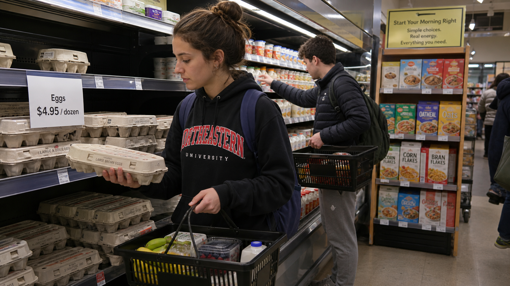
6.1
Calculate and interpret the price elasticity of demand using the midpoint method
6.2
Predict how a price change affects total revenue based on elasticity
6.3
Calculate and interpret cross-price and income elasticities
6.4
Calculate and interpret the price elasticity of supply
6.5
Explain how elasticity determines who bears the burden of a tax
When the price of a good rises, what happens to quantity demanded?
If supply shifts left and demand stays constant, what happens to equilibrium price?
What’s the difference between a shift in demand and a movement along the curve?
Chapter 4 told us
which direction
prices and quantities move.
Today:
how much
do they move?
Netflix
+19 Million
Subscribers added in late 2024–25
Price hike: Standard → $17.99, Premium → $24.99
Outcome: Utility status — churn under 2%.
Disney+
−700,000
Subscribers lost after the hike
Price hike: Ad-free → $15.99
Outcome: Luxury turnstile — churn 5.5%.
The Paradox: We treat Disney+ like a luxury we can pause, and Netflix like a utility bill we must pay.
Eggs (2025)
+96%
price surge
−2%
consumption drop
McDonald’s (2025)
+100%
Big Mac price since 2019
−3.6%
same-store sales plunge
Why did egg buyers barely flinch while fast-food customers fled?
Section 1
Measuring how much consumers respond
The law of demand tells us that consumers respond to price changes. Elasticity measures how much.
It is the degree of responsiveness of one variable (quantity) to changes in another (price or income).
Key Insight
Think of it as a sensitivity test.
Necessity / Inelastic
Price +10% → quantity drops −1% (stuck)
Luxury / Elastic
Price +10% → quantity drops −20% (flexible)
A ratio is just a comparison of two numbers: how big is \(A\) relative to \(B\)? Write it \(A/B\) (read “\(A\) to \(B\)” or “\(A\) per \(B\)”).
The idea
\(\dfrac{A}{B} = 2\)
“\(A\) is twice \(B\).”
\(\dfrac{A}{B} = 0.5\)
“\(A\) is half of \(B\).”
\(\dfrac{A}{B} = 1\)
“\(A\) and \(B\) are equal.”
Apple \$1, water bottle \$2: ratio \(= 2/1 = 2\) — water is 2× the apple.
MBTA fare hike (July 2025)
New subway fare \(p_{\text{new}} = \$2.90\)
Old subway fare \(p_{\text{old}} = \$2.40\)
Ratio \(\dfrac{p_{\text{new}}}{p_{\text{old}}} = \dfrac{2.90}{2.40} \approx \mathbf{1.208}\)
“The new fare is 120.8% of the old fare” — or equivalently, “\$1.21 of new per \$1.00 of old.”
Order matters. \(2.90/2.40 = 1.208\) is “new per old.” Flipping it — \(2.40/2.90 \approx 0.828\) — says the old fare was 82.8% of the new. Same data, different ratio, different statement.
\(\displaystyle \%\Delta = \frac{\text{new} - \text{old}}{\text{old}} \times 100\%\)
MBTA — continued
Numerator: \(p_{\text{new}} - p_{\text{old}} = 2.90 - 2.40 = \mathbf{\$0.50}\)
Denominator: \(p_{\text{old}} = \mathbf{\$2.40}\)
\(\%\Delta p = \dfrac{0.50}{2.40} \approx 0.2083 = \mathbf{+20.83\%}\)
(a price increase)
Why “old” in the denominator?
We want the change relative to the starting point — \$0.50 from \$2.40 is meaningfully different from \$0.50 from \$50.
Sign convention
\(\%\Delta > 0\) rise · \(\%\Delta < 0\) fall · \(\%\Delta = 0\) no change
Building block of elasticity: \(\;E_d = \dfrac{\%\Delta Q}{\%\Delta P}\) — two percentage changes divided by each other. We'll refine this with the midpoint method on the next slide.
$$E_d = \left|\frac{\%\;\Delta\; Q_d}{\%\;\Delta\; P}\right|$$
Absolute value — always positive (law of demand guarantees negative ratio)
Eggs: 10% price ↑ → 1% quantity ↓
E d = 0.1 — inelastic
Streaming: 10% price ↑ → 15% subscribers ↓
E d = 1.5 — elastic
Issue 1 — Rising costs
Your costs (including the opportunity cost of your time) are rising — you may want to raise prices.
Issue 2 — Competition
A high level of competition may require you to lower your prices.
The law of demand asks:
If we increase the price — how many customers will we lose? · If we decrease the price — how many will we gain?
You want to bump the Husky Tumbler from $25 to $30.
Can you raise prices without losing too many sales?
The real question
How do we capture the magnitude of customer reaction in a single number?
We need a tool that turns “some customers leave” into a precise quantity.
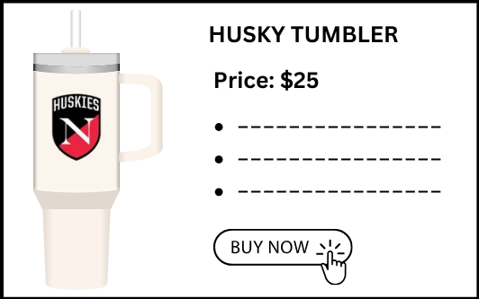
Raise Price
→
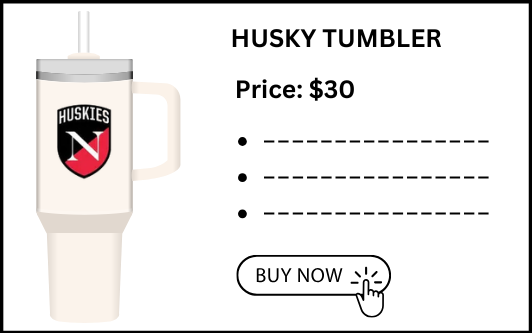
% Δ in Price
\(\dfrac{\text{new} - \text{old}}{\text{old}} \times 100\)
\(= \dfrac{30 - 25}{25} \times 100\)
\(= \mathbf{+20\%}\)
Consumers: 100
Quantity drops
→
Consumers: 90
% Δ in Quantity
\(\dfrac{\text{new} - \text{old}}{\text{old}} \times 100\)
\(= \dfrac{90 - 100}{100} \times 100\)
\(= \mathbf{-10\%}\)
Price ↑ 20% · Quantity ↓ 10% — next slide turns this into a single elasticity number.
Price: $25
100
→
Price: $30
90
Consumer Reaction to Price Change:
\(\displaystyle \text{PED} = \frac{\%\Delta Q_D}{\%\Delta P} = \frac{-10\%}{+20\%} = \mathbf{-0.5}\)
Relatively small reaction
A 20% price hike costs only 10% of customers — demand is inelastic.
Base method — uses the old value as the denominator. The midpoint method (next) fixes its directional asymmetry.
PED measures how responsive the quantity demanded is to a change in price.
Example (from A to B)
An elasticity of 0.5 means: for every 1% increase in price, quantity demanded falls by 0.5%.
Inelastic ( |PED| < 1 ) — quantity reacts less than price · Elastic ( |PED| > 1 ) — quantity reacts more.
Price: $30
90
→
Price: $25
100
Same data,
reverse direction
Consumer reaction from B to A:
\(\text{PED} = \dfrac{\%\Delta Q_D}{\%\Delta P}\)
\(\%\Delta Q_D = \dfrac{100 - 90}{90} \times 100 = \mathbf{+11.11\%}\)
\(\%\Delta P = \dfrac{25 - 30}{30} \times 100 = \mathbf{-16.67\%}\)
\(\text{PED} = \dfrac{+11.11\%}{-16.67\%} = \mathbf{-0.67} \;\;\color{#dc2626}{\boldsymbol{\neq -0.5}}\)
We get a different value of PED for the same set of numbers — just because we are moving in the opposite direction.
Base method, A→B
|PED| = 0.50
Base method, B→A
|PED| = 0.67
Goal
A single number for both directions
The fix
Use the average of the two values as the base — not the “old” one.
Midpoint Formula — memorize this
\(\displaystyle \color{white}{\%\Delta = \frac{\text{New} - \text{Old}}{\dfrac{\text{New} + \text{Old}}{2}} \times 100}\)
Avg price = \(\dfrac{25 + 30}{2} = \mathbf{\$27.50}\) · Avg quantity = \(\dfrac{100 + 90}{2} = \mathbf{95}\)
Apply to Husky Tumbler
\(\%\Delta Q = \dfrac{90 - 100}{95} \times 100 = \mathbf{-10.53\%}\)
\(\%\Delta P = \dfrac{30 - 25}{27.5} \times 100 = \mathbf{+18.18\%}\)
\(\text{PED} = \left|\dfrac{-10.53\%}{+18.18\%}\right| = \mathbf{0.58}\)
Reverse the direction (B→A) and you get the same 0.58 — the asymmetry is gone.
Scenario
Campus Coffee raises its latte from $4.50 → $5.50. Daily sales fall from 200 → 160 cups.
Your job: compute the price elasticity of demand using the midpoint method. Is demand elastic or inelastic?
Step 1 — averages
Avg price = \(\dfrac{4.50 + 5.50}{2} = \mathbf{\$5.00}\) · Avg quantity = \(\dfrac{200 + 160}{2} = \mathbf{180}\)
Step 2 — % Δ Price
\(\%\Delta P = \dfrac{5.50 - 4.50}{5.00} \times 100 = \mathbf{+20\%}\)
Step 3 — % Δ Quantity
\(\%\Delta Q = \dfrac{160 - 200}{180} \times 100 = \mathbf{-22.2\%}\)
Step 4 — Elasticity
\({\color{white}\text{PED}} = \left|\dfrac{{\color{white}-22.2\%}}{{\color{white}+20\%}}\right| = \mathbf{\color{#fde68a}{1.11}}\)
\(\text{PED} = 1.11 > 1\) → elastic demand. A 1% price hike costs you 1.11% of sales — quantity reacts more than proportionally.
Finals week
Same $4.50 → $5.50 price hike, but it's finals week — students need their caffeine. Daily sales fall from 200 → 195 cups only.
% Δ Price (we computed)
Avg P = \(\tfrac{4.50+5.50}{2} = \$5.00\) · \(\tfrac{5.50-4.50}{5.00} \times 100 = \mathbf{+20\%}\)
% Δ Quantity (we computed)
Avg Q = \(\tfrac{200+195}{2} = 197.5\) · \(\tfrac{195-200}{197.5} \times 100 \approx \mathbf{-2.53\%}\)
Your job: just the final step. What is the elasticity?
A
0.13
B
0.50
C
7.91
D
1.11
Click your answer — results show on the next slide.
Final step
\({\color{white}\text{PED}} = \left|\dfrac{{\color{white}-2.53\%}}{{\color{white}+20\%}}\right| = \mathbf{\color{#fde68a}{0.13}}\)
\(\text{PED} = 0.13 \ll 1\) → demand is highly inelastic. Quantity barely budges; the shop's revenue actually rises.
Common wrong picks
Live class vote
Same shop, different week
Normal week: PED = 1.11 (elastic). Finals week: PED = 0.13 (very inelastic). Context changes everything — we'll formalize this in the determinants slide.
Section 2
Classifying and explaining consumer responsiveness
▮ Inelastic (E d < 1) ▮ Unit elastic ▮ Elastic (E d > 1)
Panel A
Perfectly Elastic
\(E_d = \infty\)
Q changes by any %
Panel B
Elastic
\(1 < E_d < \infty\)
Panel C
Unit Elastic
\(E_d = 1\)
Panel D
Inelastic
\(0 < E_d < 1\)
Panel E
Perfectly Inelastic
\(E_d = 0\)
Q changes by 0%
\(E_D = \dfrac{\%\Delta Q_D}{\%\Delta P} = \dfrac{\color{#dc2626}{10\%}\;\text{(smaller)}}{\color{#dc2626}{20\%}\;\text{(larger)}}\)
\(\dfrac{\color{#dc2626}{10\%}}{\color{#dc2626}{10\%}}\)
\(E_D = \dfrac{\%\Delta Q_D}{\%\Delta P} = \dfrac{\color{#dc2626}{20\%}\;\text{(larger)}}{\color{#dc2626}{10\%}\;\text{(smaller)}}\)
Inelastic (0 ≤ |E| < 1)
Unit
Elastic (|E| > 1)
0
1
\(\infty\)
Four factors push demand toward elastic (responsive) or inelastic (sticky). Press ↓ to dive into each.
Substitutability (+ market definition)
The more substitutes, the more elastic. Froot Loops → elastic (any cereal). Airfare → inelastic (no substitute for flying).
Proportion of Income
The smaller the share of income, the more inelastic. Salt, toothpaste, gum → you don't shop around for cheaper.
Luxuries vs. Necessities
Necessities (electricity, water, gas) → inelastic. Luxuries (Vision Pro, vacations) → elastic.
Time Period
Short run → inelastic (can't switch cars overnight). Long run → elastic (buy EV, move closer to work).
The more substitutes a product has, the more elastic its demand.
Many substitutes → elastic
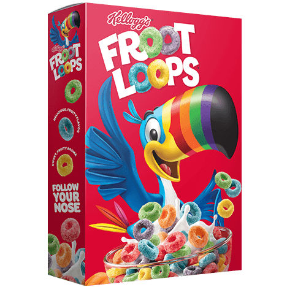
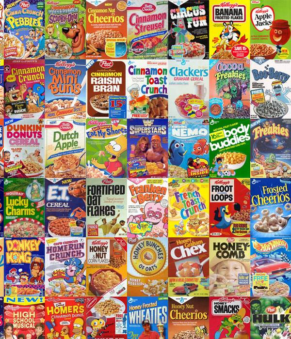
Froot Loops have many close substitutes (Cheerios, Chex, Cinnamon Toast Crunch...). If Kellogg's raises the price, buyers easily switch.
No close substitute → inelastic
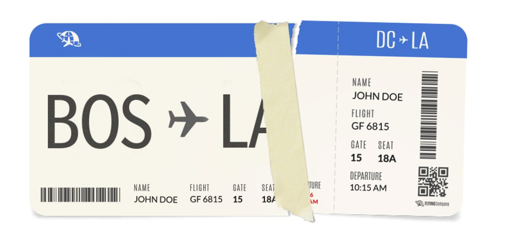
Flying coast-to-coast has no close substitute (driving takes days, trains too slow). A price hike barely dents demand.
Market definition matters. “Froot Loops” (narrow) → elastic. “Cereal in general” (broader) → less elastic. “All breakfast food” (broadest) → very inelastic. Narrower categories have more substitutes outside them.
Price elasticity is higher when close substitutes are available.
The smaller the share of income spent on a product, the lower its elasticity.
Example: salt, toothpaste, gum.
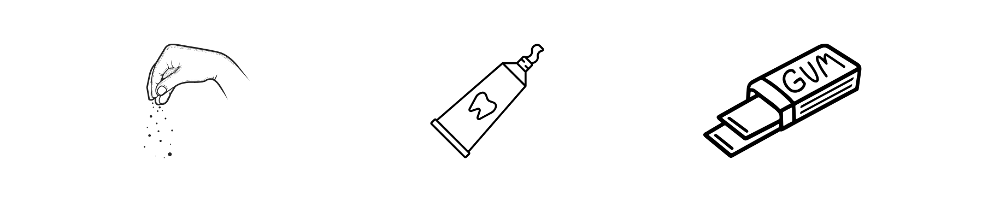
Consumers don't notice or care about minor price changes.
It's inconvenient to search for substitutes for low-cost items.
Perceived savings are trivial next to rent or groceries.
Luxuries have more elastic demand than necessities.
Example: Basic utilities vs. high-end electronics.
Necessity → inelastic
Electricity, water, and gas are indispensable. Consumers have limited ability to cut back even when prices rise.
Luxury → elastic
Premium smartphones, Apple Vision Pro, high-tech gadgets are desirable but not essential — demand drops sharply when prices rise.
The line between “necessity” and “luxury” depends on the buyer — not the product itself.
When consumers have time to adjust their consumption, demand becomes more elastic.
Example: Gasoline, short run vs. long run.
Short Run (SR) → inelastic
Gas prices spike today — you still drive to work tomorrow. Not sensitive to gas price.
10 % rise → ~2.5 % drop after 1 year
Long Run (LR) → elastic
Over years, people buy EVs, move closer to work, switch to transit. Sensitive to gas price.
10 % rise → ~6 % drop after 5 years
Price elasticity is higher in the long run.
When avian flu nearly doubled egg prices in 2025, consumers absorbed $1.41 billion in lost purchasing power rather than switching away.
Using the four determinants , explain why egg demand is so inelastic.
Think
2 min
Pair
2 min
Share
1 min
Substitutes: Nothing replaces eggs in baking, scrambling, or frying
Necessity: Staple protein — families depend on eggs for affordable nutrition
Broad market: “Eggs” is broadly defined — compare to “McDonald’s” (one chain among many)
Short run: Price spike was sudden — no time to find alternatives
Now the real question: what happened to revenue ?
A handful of brands per aisle, one or two flavors of each. Take it or leave it.
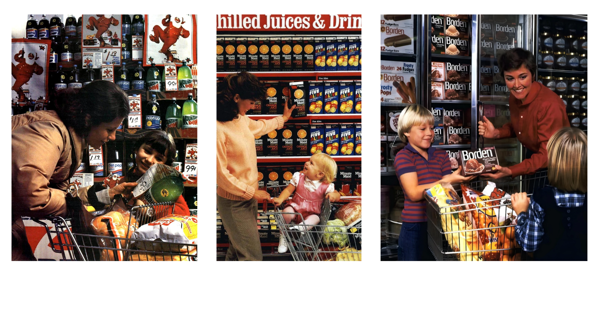
Same aisle, today — dozens of brands, hundreds of variants. Why?
Coke aisle · Juice & specialty drinks · Frozen foods — all variants of essentially the same product.
Companies add features (cherry flavor, with a cherry on top) to make their product more inelastic — fewer close substitutes ⇒ price power.
Vanilla Ice Cream
More
competition
→
Vanilla Ice Cream
Less
competition
→
Cherry Ice Cream
Differentiation = fewer close substitutes = more inelastic demand = pricing power.
Section 3
The billion-dollar question: raise the price or not?
Back to the start-up: Custom Tumbler.
Your costs are rising (including the opportunity cost of your time) — you may want to raise prices.
Elasticity tells you how many fewer sales a price hike will cost you.
The real question: how much will your total revenue fall — or might it actually rise?
\(\text{TR} = P \times Q\). For Tumbler with PED = 2.75 (elastic), should we raise or lower the price?
Price ↑ ( $25 → $30 )
Price ↓ ( $30 → $25 )
\(P = \$30, Q = 60 \Rightarrow \text{TR} = \mathbf{\$1{,}800}\)
vs.
\(P = \$25, Q = 100 \Rightarrow \text{TR} = \mathbf{\$2{,}500}\)
Price ↑ ⇒ revenue falls.
Price ↓ ⇒ revenue rises.
Same Tumbler scenario, but during finals week the customer reaction is weak — PED = 0.14 (inelastic). Now what?
Price ↑ ( $25 → $30 )
Price ↓ ( $30 → $25 )
\(P = \$30, Q = 90 \Rightarrow \text{TR} = \mathbf{\$2{,}700}\)
vs.
\(P = \$25, Q = 100 \Rightarrow \text{TR} = \mathbf{\$2{,}500}\)
Price ↑ ⇒ revenue rises.
Price ↓ ⇒ revenue falls.
TR = P × Q
Two competing forces when price rises:
Price Effect
Higher price per unit → revenue up
Quantity Effect
Fewer units sold → revenue down
| Demand | Price ↑ | Price ↓ | Winner |
|---|---|---|---|
| Elastic (E d > 1) | TR falls | TR rises | Quantity effect |
| Unit elastic | TR unchanged | TR unchanged | Tie |
| Inelastic (E d < 1) | TR rises | TR falls | Price effect |
The slope is constant along a straight demand line — but the elasticity is not.
Slope = \(\dfrac{0 - 30}{60 - 0} = \mathbf{-0.5}\) — same everywhere on the line.
Top segment — ($30, 0) → ($20, 20)
\(E_d = \dfrac{|20-0| / \tfrac{20+0}{2}}{|20-30| / \tfrac{20+30}{2}} = \dfrac{20/10}{10/25} = \mathbf{5}\) — elastic
Middle segment — ($20, 20) → ($10, 40)
\(E_d = \dfrac{|40-20| / \tfrac{40+20}{2}}{|10-20| / \tfrac{10+20}{2}} = \dfrac{20/30}{10/15} = \mathbf{1}\) — unit elastic
Bottom segment — ($10, 40) → ($0, 60)
\(E_d = \dfrac{|60-40| / \tfrac{60+40}{2}}{|0-10| / \tfrac{0+10}{2}} = \dfrac{20/50}{10/5} = \mathbf{0.20}\) — inelastic
The pattern: high price & low quantity (top) → elastic. Low price & high quantity (bottom) → inelastic. Same slope, very different responsiveness.
WRONG
“Elasticity and slope are the same thing.”
RIGHT
Slope = ratio of absolute changes (fixed).
Elasticity = ratio of percentage changes (varies along the curve).
Why it matters: On a straight-line demand curve, demand is elastic at high prices (top) and inelastic at low prices (bottom). Firms need to know where they are on the curve.
Campus Coffee (Elastic, E d = 1.11)
Before: $4.50 × 200 = $900/day
After: $5.50 × 160 = $880/day
TR fell $20
Quantity effect won. Bad pricing decision.
Eggs (Inelastic, E d = 0.03)
Before: $2.50 × 100M = $250M
After: $5.00 × 98M = $490M
TR nearly doubled
Price effect won. Supply shock increased revenue.
Inelastic Segment
Standard plan: $15.49 → $18.99
Result: +50M subscribers
Revenue: $34 billion
Netflix became a household necessity. Price hikes raised TR.
Elastic Segment
Ad tier: $7.99/month
Captured: 94M users
Monetizes via: advertising
Price-sensitive consumers get a lower price. Netflix keeps them.
Strategy: Charge more to inelastic consumers (ad-free). Retain elastic consumers at a lower price (ads). Maximize total revenue from both segments.
Why can good news for farmers be bad news for farmers?
New wheat variety boosts yields 20% → supply shifts right
Demand for wheat is inelastic — people don’t eat much more bread when it’s cheaper
Price drop (%) exceeds quantity increase (%) → TR falls
This is why farmers historically receive government subsidies
Netflix raised Standard to $18.99 and added subscribers. What happened to total revenue?
A
TR fell (elastic)
B
TR unchanged
C
TR rose (inelastic)
D
Can’t tell
Answer: C — Both P and Q rose, so TR = P × Q must have risen. Netflix understood its demand had become inelastic.
Both P and Q rose, so TR = P × Q must have risen. Netflix understood its demand had become inelastic.
Halfway point
Press 5 to start the countdown · Back at the top of the hour
Up next: cross-price and income elasticity — why a 10% raise sends people to Whole Foods, and a recession lifts Walmart.
Section 4
How demand responds to other prices and income
Complements (salad & dressing) have a negative cross elasticity: when one's price falls, the other's quantity rises.
Salad (good a)
Salad price falls $4.99 → $3.29, Q rises 60 → 100
Dressing (good b)
Dressing demand shifts right at $3.99
Cross Elasticity
\(E_{ab} = \dfrac{\%\Delta Q_b}{\%\Delta P_a}\)
\(= \dfrac{(120-80)/100}{(3.29-4.99)/4.14} = \dfrac{+40\%}{-41\%}\)
\(= \mathbf{-0.98}\)
Negative → complements.
Substitutes (Skinny Pop & Boom Chicka Pop) have a positive cross elasticity: when one's price falls, buyers switch away from the other.
Skinny Pop (good a)
Skinny Pop price falls $4.79 → $3.50
Boom Chicka Pop (good b)
Boom Chicka demand shifts left at $3.49
Cross Elasticity
\(E_{ab} = \dfrac{\%\Delta Q_b}{\%\Delta P_a}\)
\(= \dfrac{(30-50)/40}{(3.50-4.79)/4.14} = \dfrac{-50\%}{-31\%}\)
\(= \mathbf{+1.61}\)
Positive → substitutes.
Question
Drop the price on the visible item (energy drink). Demand for its complement (snack) shifts right at full price.
Energy drink (promoted)
$3 → 2 for $5
Snack (silent winner)
Stays at $3.99 — quantity sold jumps.
The promoted item is a loss leader. The store's profit comes from the complement at full price.
Walk in for Loss Leaders:
99¢ notebooks · $2.99 colored pencils · 40¢ glue
End up buying other things:
laptop · headphones · backpack · clothes
Loss-leader strategy: intentionally price one product below cost to attract foot traffic — then boost total revenue with full-price complements.
One product priced below cost creates the traffic; a complement at full price creates the profit.
Notebook (below cost)
$1 → $0.10
Sales double. Store loses money on every notebook.
Laptop (the real profit)
Stays around $699 – $799. Quantity jumps.
Demand shifts right; store can even nudge the price up.
$$E_{cross} = \frac{\%\;\Delta\; Q_A}{\%\;\Delta\; P_B}$$
The sign tells you the relationship
+
Substitutes
Netflix ↑ → Disney+ ↑
Cigarettes ↑ → E-cigs ↑
−
Complements
Phones ↑ → Cases ↓
Gas ↑ → SUVs ↓
0
Unrelated
Eggs ↑ → Lawn mowers? No effect.
Nintendo releases Switch 2 at $499 — up from $299. Two market reactions follow:
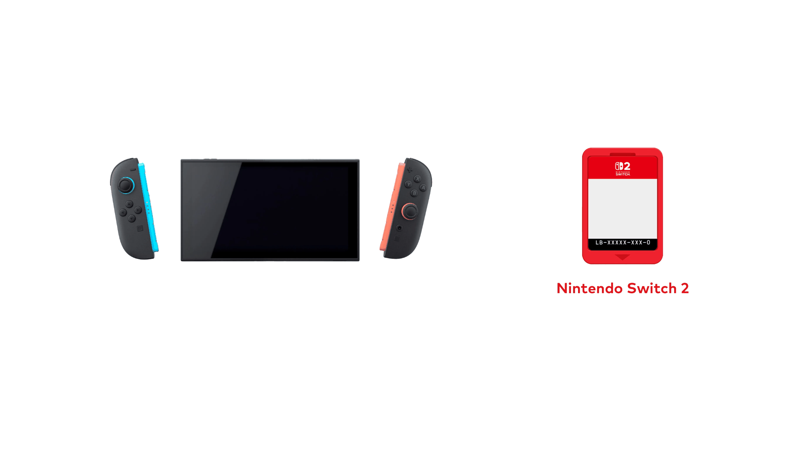
Switch console & its games
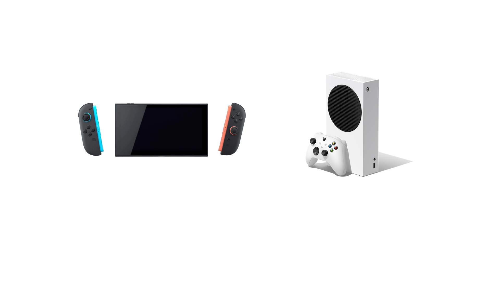
Switch console vs. Xbox
We did the price math for you: \(\%\Delta P_{\text{console}} = \dfrac{499 - 299}{299} \times 100 \approx \mathbf{+66.89\%}\) (base method)
Your job: compute CPED on the next two polls — for games and for Xbox.
Switch console price: \(\%\Delta P = +66.89\%\). Switch games quantity: \(\%\Delta Q_{\text{games}} = -15\%\).
What is the cross-price elasticity of demand between the Switch console and its games? (3 d.p.)
A
−0.224
B
+0.224
C
−4.459
D
−0.150
Click your answer — results show on the next slide.
Computation
\({\color{white}\text{CPED}} = \dfrac{{\color{white}\%\Delta Q_{\text{games}}}}{{\color{white}\%\Delta P_{\text{console}}}} = \dfrac{{\color{white}-15\%}}{{\color{white}+66.89\%}} = \mathbf{\color{#fde68a}{-0.224}}\)
Negative sign → Switch console and Switch games are complements. A pricier console means fewer consoles sold — and therefore fewer games sold.
Common wrong picks
Live class vote
Switch console price: \(\%\Delta P = +66.89\%\). Xbox console quantity: \(\%\Delta Q_{\text{xbox}} = +10\%\).
What is the cross-price elasticity of demand between the Switch and Xbox consoles? (3 d.p.)
A
+0.150
B
−0.150
C
+6.689
D
+0.224
Click your answer — results show on the next slide.
Computation
\({\color{white}\text{CPED}} = \dfrac{{\color{white}\%\Delta Q_{\text{xbox}}}}{{\color{white}\%\Delta P_{\text{switch}}}} = \dfrac{{\color{white}+10\%}}{{\color{white}+66.89\%}} = \mathbf{\color{#fde68a}{+0.150}}\)
Positive sign → Switch and Xbox are substitutes. A pricier Switch sends some buyers to the competitor. Small magnitude (0.150) means the response is mild — they're not perfect substitutes.
Common wrong picks
Live class vote
$$E_{income} = \frac{\%\;\Delta\; Q_d}{\%\;\Delta\; Income}$$
Necessity
0 < E < 1
Groceries, gasoline, basic clothing
Income ×2 ≠ bread ×2
Luxury
E > 1
Hermès, foreign travel, premium streaming
Hermès grew 15% in 2024
Inferior Good
E < 0
Store-brand groceries, instant noodles, bus tickets
Private labels surged to $271B
“Inferior” is a technical term about income-demand relationship, not a quality judgment.
A family switches from organic pasta ($4/box) to store-brand ($1.50/box) as real income falls. Store-brand pasta is:
A
Normal good
B
Inferior good
C
Luxury good
D
Substitute
Answer: B — Income falls → demand rises = negative income elasticity = inferior good. D is true (it’s a substitute), but the question asks about the income relationship.
Income falls → demand rises = negative income elasticity = inferior good. D is true (it’s a substitute), but the question asks about theincomerelationship.
Section 5
Who really pays when the government taxes a good?
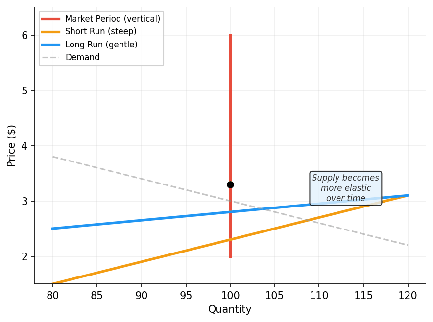
Market period: Supply fixed. Flower shop on Valentine’s Day.
Short run: Extra shifts, spare capacity. Egg farms raise replacement pullets.
Long run: New firms enter. Austin adds 120K housing units.
Austin (elastic supply): rents fell 16%. SF (inelastic): prices soared.
The side that can’t escape the tax bears the burden.
Regardless of who legally writes the check.
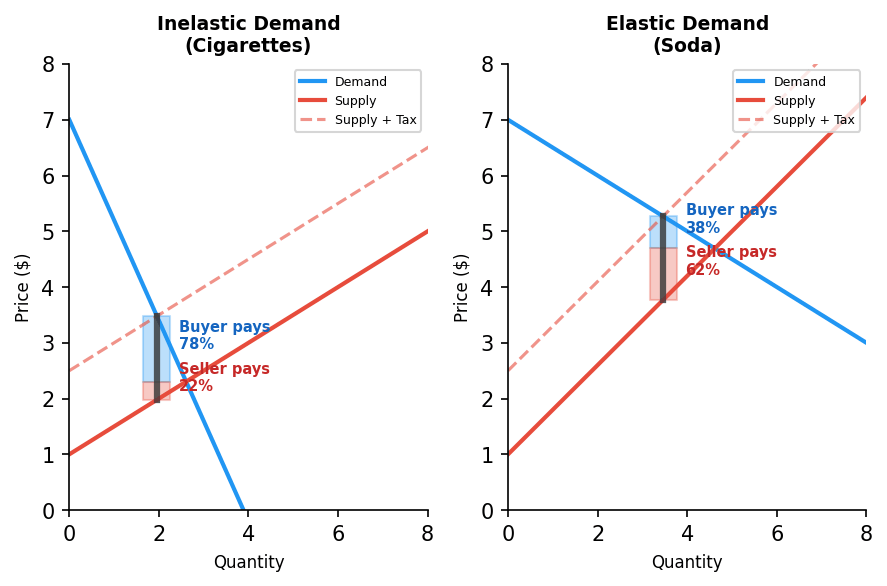
Cigarettes (PED 0.3–0.4)
Smokers bear most of the tax. Can’t easily quit. Avg state tax: $2.01/pack.
Youth cigarettes (PED 0.7)
More elastic! Taxes prevent youth smoking better than reduce adult smoking.
Payroll taxes (50/50 legal split)
Labor supply inelastic → employees bear most of burden through lower wages.
You’re advising the governor on funding universal pre-K. Two options:
Option A: Cigarette Tax
+$1/pack • PED = 0.3
Option B: Soda Tax
1.5¢/oz • PED = 0.8
Which raises more stable revenue ?
Which changes behavior more effectively?
Which is fairer — and how do you define fair?
1. Elasticity measures responsiveness — ratio of percentage changes, not slope.
2. Midpoint method eliminates directional asymmetry.
3. Total revenue test — elastic → price hike hurts. Inelastic → price hike helps.
4. Four determinants — substitutes, necessity, market definition, time horizon.
5. The inelastic side bears the tax burden — governs every debate about sin taxes, carbon taxes, and payroll taxes.
Next time:
Chapter 7 — Government Intervention. We’ll use elasticity to predict
who bears the tax
, how big the
deadweight loss
becomes, and why price ceilings/floors hurt or help.
Today’s tool, tomorrow’s policy debates.
Building On
Setting Up
Elasticity is the most-used number in applied microeconomics — every policy chapter from here asks the same question: how elastic is the response, and who pays the price?
Philadelphia imposed a soda tax, and residents started buying soda in suburban stores to avoid it.
Using the concept of elasticity, explain in one sentence why this tax-avoidance behavior would NOT happen with a cigarette tax.
Write your answer on paper or your device. 2 minutes.